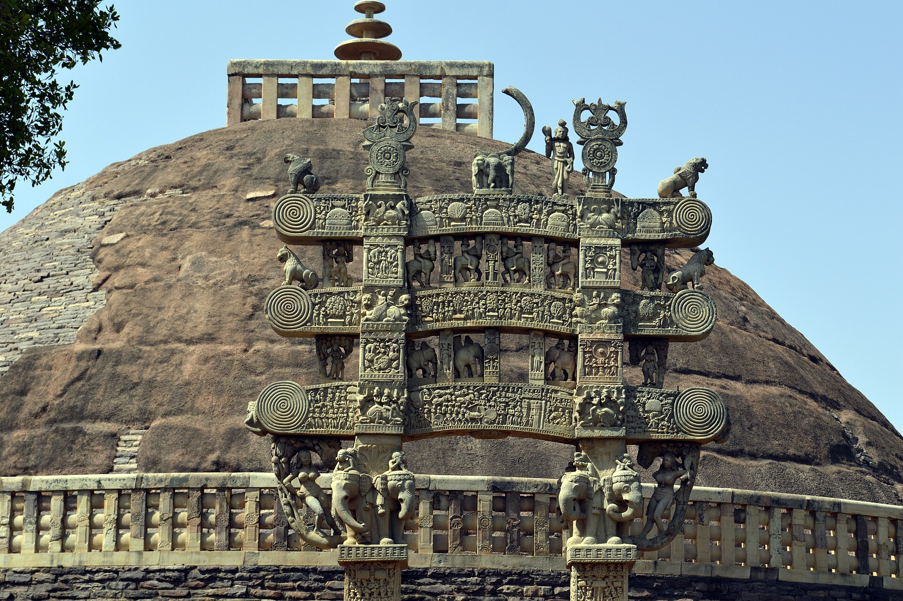

3rd Century BCE onwards
Sanchi
BUDDHIST ART & ARCHITECTURE
Sanchi is one of India's most important Buddhist heritage sites, famous for its stupas, gateways and sculptural decoration.
Historical Context
The Great Stupa at Sanchi was originally commissioned during the Mauryan period and was later expanded and decorated by subsequent rulers.
Why It Matters
Sanchi demonstrates the development of Buddhist architecture and narrative sculpture in ancient India.